Selected work
Filter by type, or click any piece to see it full size.
The Land Rates Puzzle
Policy brief cover, 2026
Land Rates: interior spread
Policy brief layout
National Assembly Budget Review
Report cover, FY 2026/27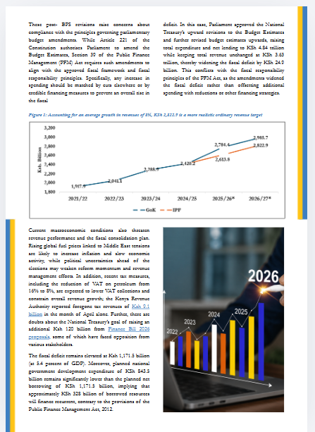
Budget Review: findings spread
Report layout with chart
Health Financing Strategy
Strategy document cover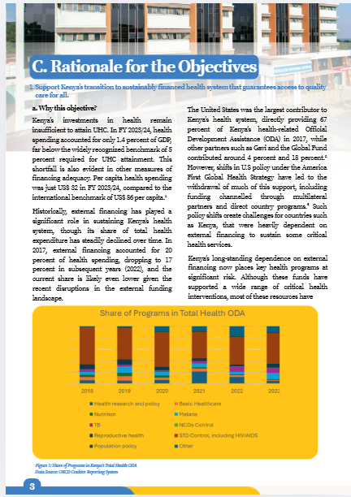
Health Financing: rationale spread
Strategy document layout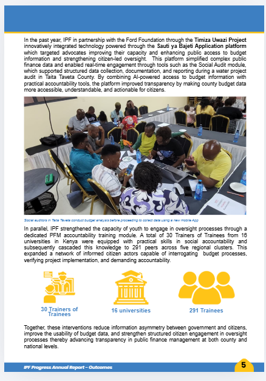
Annual Report: outcomes
Progress report, 2025Assessing Shifts in Fiscal Priorities
Report cover, August 2026Strengthening Budget Credibility
Social infographic card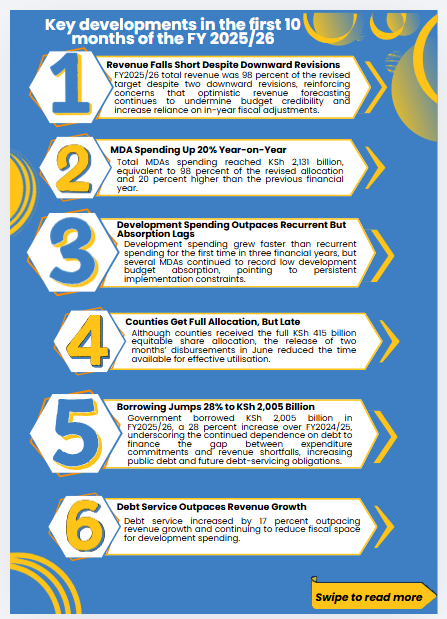
Key Developments, FY 2025/26
Carousel infographic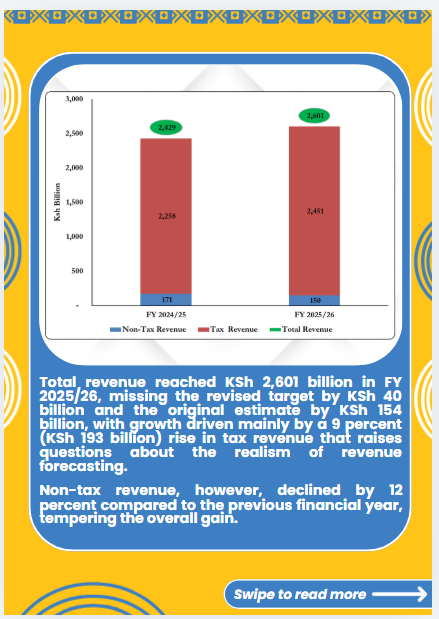
Revenue Performance
Data chart card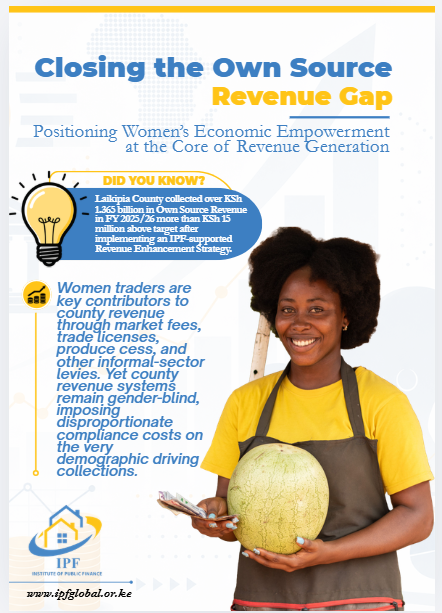
Closing the Own Source Revenue Gap
Social infographic card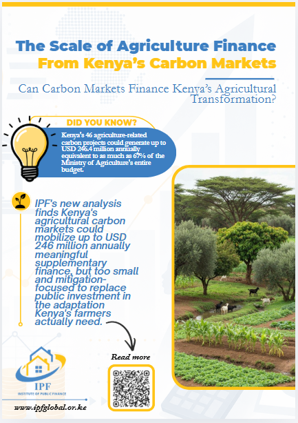
Agriculture & Carbon Markets
Social infographic card
Africa's Debt Reform Agenda
Quote card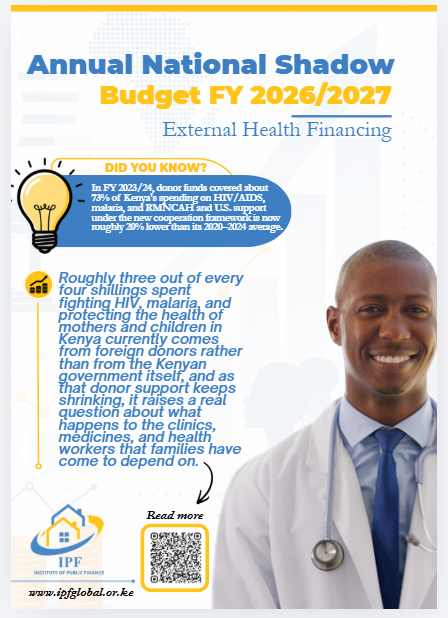
Shadow Budget: Health Financing
Social infographic card
Budget Performance Snapshot
Quarterly data report
IPF Golf Day 2026
Event poster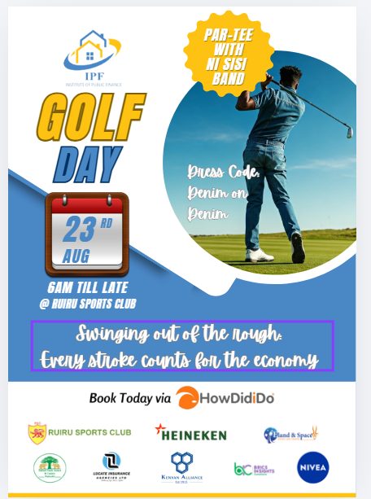
Golf Day: alternate design
Event poster
TaRIFA: Climate Finance Course
Program flyer
Report cover template
Brand system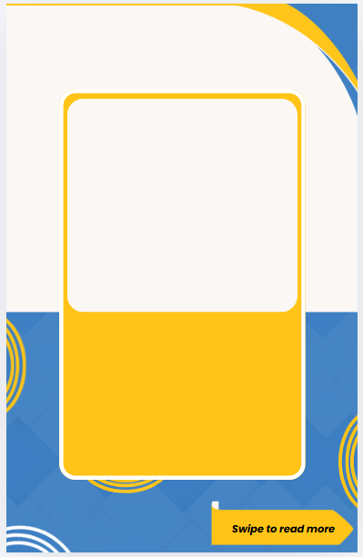
Social card template
Brand systemCarousel slide template
Brand system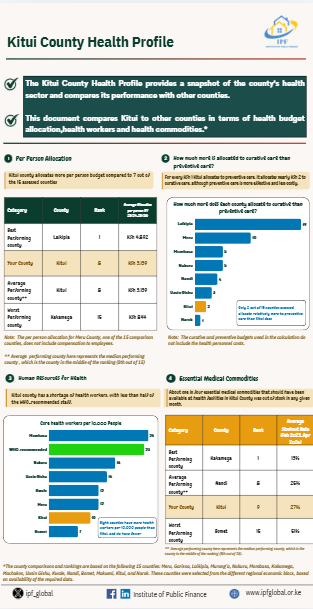
Kitui County Health Profile
Social infographic card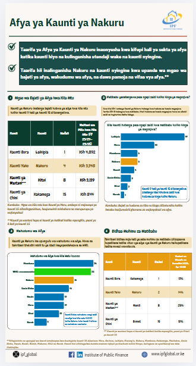
Nakuru Health Profile (Swahili)
Social infographic card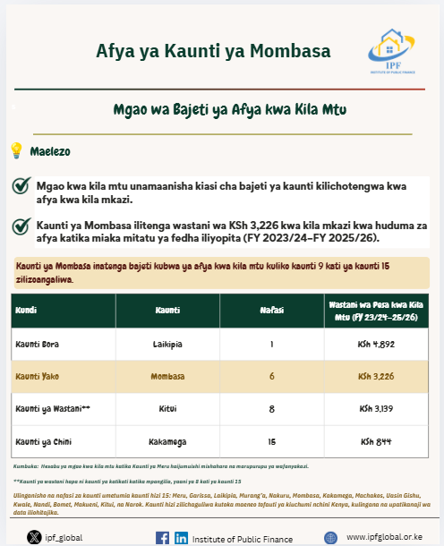
Mombasa: Budget Allocation
Social infographic card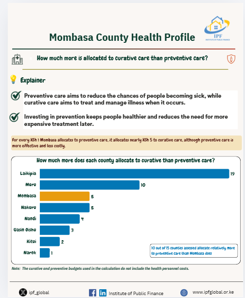
Mombasa: Curative vs Preventive
Social infographic card
Mombasa: Human Resources for Health
Social infographic card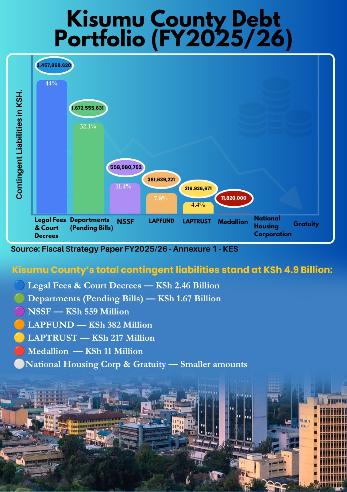
Kisumu County: Debt Analysis
County profile card
Kisumu County: Pending Bills
County profile card
Key Developments, FY 2026/27
Carousel infographicShaping the Next UN Secretary-General
Quote & explainer card